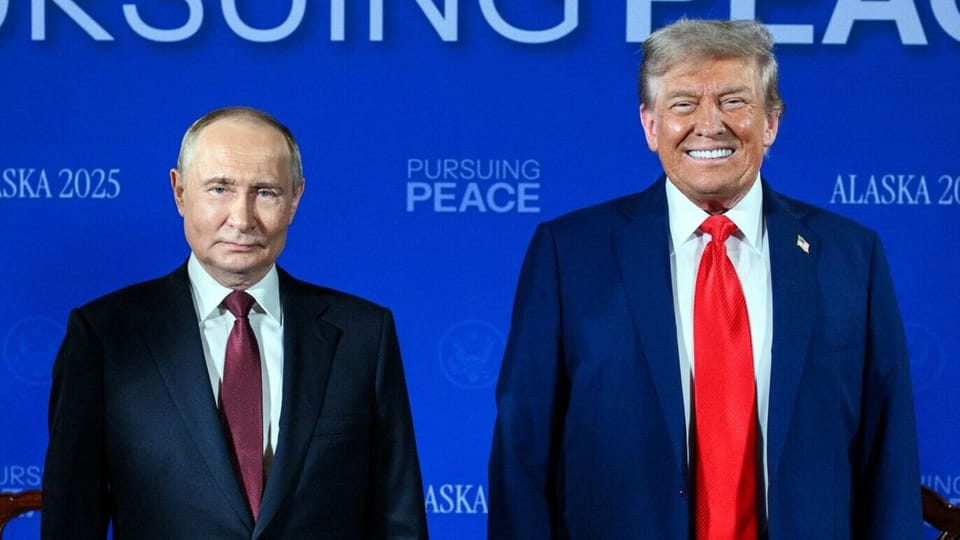

世界苦茶08月17日新闻 | 30条 | 特朗普稱習近平保證不入侵臺灣

特朗普稱習近平保證不入侵臺灣 | 特朗普恐用放棄領土換取美國安全保障 | 澤連斯基週一訪美 | 中國7月火電發電量創新高 | 塞爾維亞抗議活動加劇
每日三條新聞解析
苦茶数据
美元兑人民币：7.18（昨日7.18，前日7.18）
美元兑日元：146.85（昨日147.01，前日146.41）
上证指数：休市（昨日3696，前日3685）
标普500指数：休市（昨日6449，前日6458）
比特币：118197（昨日117899，前日118133）
布伦特原油：65.85（昨日66.15，前日65.98）
中国新闻
• 特朗普称习近平告诉他，在他担任美国总统期间，中国不会入侵台湾： 美国总统唐纳德·特朗普周五表示，中国国家主席习近平告诉他，在特朗普任职期间，中国不会入侵台湾。特朗普在与俄罗斯总统弗拉基米尔·普京就莫斯科入侵乌克兰问题举行会谈之前，接受福克斯新闻采访时发表了上述言论。“我会告诉你，你知道，你和习近平主席对中国台湾问题的看法非常相似，但我认为只要我在任，就不可能发生这种事。我们拭目以待吧，”特朗普在接受福克斯新闻“特别报道”节目采访时表示。“他告诉我，‘只要你还是总统，我就永远不会这么做。’习近平主席告诉我，我说，‘好吧，我很感激’，但他也说，‘但我非常有耐心，中国也非常有耐心。’”特朗普说。 （翻評：你相信嗎？）
• 港人八成反对同性登记 ：据香港政府收到的公众意见书，逾八成港人反对官方拟设的同性伴侣关系登记机制，担心这么做会影响传统婚姻制度。香港政制及内地事务局7月2日宣布拟设立同性伴侣关系登记机制，允许已在海外登记结婚的同性伴侣在港登记，并享有医疗决定、医院探访及身后事处理等有限权利。立法会相关法案委员会早前审议上述草案，并邀请公众提供书面意见。综合香港《星岛日报》和香港电台报道，官方收到的1万零775份公众意见书中，支持草案的占总数19.3%，反对的占80.7%。
• 中国剧遇冷或放宽政策 ：近两年短剧潮流兴起，中国长剧点阅暴跌，之前夯剧如《庆余年》集均点阅破亿，不但话题十足，而且口碑也佳，但这阵子的热播剧《国色芳华》《难哄》点阅不过就四五千万，而暑假档本应该是中国剧最热档期，但2025年暑假从偶像剧《樱桃琥珀》，到古装剧《定风波》《桃花映江山》《锦绣芳华》等，几乎表现全远远不如预期。有报道指出，中国官方为了拯救影视剧巿场，传将实行21条新政策，包括解除限古令、40集上限的限集令。中国剧进入资金紧缩期，若不是四大平台腾讯视频、爱奇艺、优酷和芒果投资，新剧很难开得起来。中国剧开机数量明显减少，中小咖明星没戏演，以往横店到处都是剧组在拍戏的荣景不再，据说为此有关单位传将放宽政策。
• 王毅下周将访印谈边界 ：中国官方通报，中国外交部长王毅将于下周访问印度，举行中印边境问题会晤。中国外交部发言人星期六在官网宣布，中共政治局委员、中国外交部长、中印边界问题中方特别代表王毅，将在下星期一至三应邀访问印度并举行中印边界问题特别代表第24次会晤。彭博社星期四引述知情人士报道，王毅可能在8月18日访问新德里，预计将与印度国家安全顾问多瓦尔及外长苏杰生会面。
• 中日农业部长会晤取消 ：日本官方透露，日本和中国农业部长会晤，因时程安排无法落实。据日本共同社报道，内阁秘书长林芳正星期四在记者会上证实，中国农业农村部部长韩俊访日，以及与日本农林水产部长小泉进次郎举行会谈的计划取消。林芳正称，双方因未能就日程安排达成共识，而无法落实日中农业部长会晤。 （翻評：肯定因為小泉進次郎參拜靖國神社。）
• 中国多地将现强降雨 ：中国云南南部、华南等地从星期六起至下星期一，会出现强降雨。据中国天气网消息，星期五早晨，台风“杨柳”已经停编，但残余环流带来的风雨影响仍在持续。位于副热带高压北侧的华北、东北一带，在冷暖气流交汇的影响下，也出现了频繁降雨和强对流天气。监测显示，星期五上午8时至星期六上午6时，四川东北部、陕西南部、山西中南部、河北中南部、北京中北部、天津中南部、山东北部、河南北部、黑龙江中部、辽宁东部及广东西部沿海、广西沿海和北部、贵州、云南南部等地部分地区出现大到暴雨，局地大暴雨。
• 金门两岸和平祈福法会 ：台湾金门星期六举行两岸和平消灾祈福超荐水陆大法会，台湾陆委会主委邱垂正特别跨海出席。他受访时强调，两岸应以和为贵，在对等尊严的原则下，恢复正常交流对话，才能共同走向和平共荣。据《联合报》报道，两岸和平消灾祈福超荐水陆大法会在星期六上午举行，邱垂正与金门县长陈福海、县议会议长洪允典等人一同上香祈福。邱垂正在会后受访时说，此次能参与以两岸和平为主题的两岸水陆法会深感荣幸，也祝愿中国大陆能放弃对台敌意的思维跟负面作为，特别是一连串对台湾极限施压的威胁，包括外交打压、经济胁迫、社会统战渗透，以及对台湾负面法律战等。他指出，这些复合性施压已经成为台海不安和两岸紧张的主要根源。
• 四川啤酒节桁架倒塌致死伤 ：中国四川绵竹一啤酒节现场发生桁架倒塌，导致两人身亡三人重伤。据“绵竹市应急管理”微信公众号消息，绵竹市应急管理局星期六发布情况通报称，事发在星期五晚上9时50分许，原因出于强对流天气。通报说，事发后绵竹市立即组织相关部门开展应急救援、医疗救治、善后处置等工作，经全力抢救，两人不幸身亡，三人重伤，他们暂无生命危险。目前事件原因正在进一步调查中。
• 港府批美媒抹黑黎智英待遇 ：香港特区政府发文批评，美媒抹黑香港壹传媒集团创始人黎智英在羁押期间的待遇。据香港政府公报，港府星期五对包括美国有线电视新闻网在内的一些外国媒体，罔顾黎智英案的法庭聆讯中所呈现的客观事实，作出断章取义、不尽不实的报道，予以强烈谴责。港府发言人批评，有关报道企图令公众误以为黎智英没有获得所需医疗服务，以抹黑黎智英所涉及的《香港国安法》案件，以及他羁押情况和医疗服务安排，旨在污蔑和破坏香港法治，行为卑劣，违背新闻工作者专业操守。
• 威海渔港面包车坠海致6死 ：山东威海荣城市桃园渔港一辆载装卸人员的面包车8月16日4时许离港时坠海，造成6人死亡，3人生还，另有2人失踪。搜救和事故调查等工作正在进行。
• 中国7月火电量创新高 ：受极端天气影响，中国7月化石燃料发电量升至2024年8月以来最高水平。综合中国国家统计局官网的数据和路透社报道，中国7月火电达到6020亿千瓦时，同比增长4.3%，较6月加快3.2个百分点，其中以燃煤发电为主，也包含小部分天然气发电。受干旱气候影响，水库入水量受限，导致7月水力发电量降幅扩大，同比降9.8%。创纪录的高温天气也推高了中国多地的电力需求。这两个供求因素都导致了中国7月火电升至2024年8月以来最高水平。
亚太印太新闻
• 台湾回应王毅台湾言论 ：针对中国大陆外交部长王毅称台湾归还中国是第二次世界大战的胜利成果，台湾外长林佳龙批评王毅说法恶意曲解史实，“中华人民共和国从未统治过台湾，更无权在国际社会上代表台湾”。星期五是二战日本战败80周年纪念日。据新华社报道，王毅当天在澜湄合作第10次外长会后说，“我还要就今天这个日子表明中方的立场”。他说，《开罗宣言》《波茨坦公告》等一系列国际文件明确了日本的战争责任，要求日本把从中国窃取的领土包括台湾归还中国。这是世界反法西斯战争不容挑战的胜利成果，也是战后国际秩序的重要组成部分。
• 巴基斯坦洪灾致逾三百死 ：巴基斯坦西北部地区两天来的强降雨和洪水已造成300多人死亡。路透社引述巴基斯坦官员星期六发布的消息说，救援工作和道路疏通工作仍在进行中，紧急资金已到位。他们补充说，强降雨将持续到下星期四。乌云密布、山洪暴发、雷击、山体滑坡和建筑物倒塌，造成今年季风季节最严重的灾害。据灾害管理局称，截至星期六凌晨，情况最严重的西北部开伯尔——普赫图赫瓦省山区已确认307人死亡，另有更多人失踪。遇难者包括一架坠毁救灾直升机上的五名机组人员。
• 泰柬军方边境会谈签署备忘录 ：泰国和柬埔寨军方在泰国达叻府召开特别会议，讨论维护边境和平等问题。泰国海军星期六在社交媒体上说，尖竹汶府、达叻府边境指挥官和柬埔寨第三军区指挥官当日在泰国达叻府召开地区边界委员会会议，旨在通过和平方式解决有关问题，维护边境地区和平和两国人民正常生活。泰国海军说，双方就本次会议签署谅解备忘录。新华社引述柬埔寨国防部发言人马莉淑洁达星期六在新闻发布会上的话说，泰柬边境军区指挥官当天举行特别会议，讨论两国近期达成停火协议后的边界问题。
• 缅甸军方8月14日晚对该国曼德勒省的城镇抹谷进行空袭，造成至少21人死亡、7人受伤，死者中有16名妇女： 该地区2024年7月被缅甸德昂民族解放武装占领。该组织称，军方袭击的目标似乎是一座佛教寺院，袭击还造成15座房屋受损。当地居民称，死亡人数已上升至近30人，死亡人数高是因为其中一座被炸毁的房屋在接待孕妇。
缅甸军方尚未就此事置评。
科技新闻
• OpenAI或售股融资60亿美元 ：美东时间周五，据消息人士透露，OpenAI正准备以5000亿美元的公司出售约60亿美元的股票。据一位熟悉谈判情况的人士透露，这些股票将由OpenAI现任和前任员工出售给软银、Dragoneer Investment Group以及Thrive Capital等投资者。不过，谈判仍处于早期阶段，细节可能会发生变化。上述三家公司都是OpenAI的现有投资者，其中Thrive Capital可能会领投。自2022年底推出生成式AI聊天机器人ChatGPT以来，OpenAI的估值就一直呈指数级增长。在两年前，该公司估值仅有150亿美元，而如今已经飙升了超过30倍。
• Meta再度重组AI团队 ：美东时间周五，据知情人士透露，Meta正计划全面重组其人工智能工作团队 —— 这是在过去六个月内Meta对其AI团队结构进行的第四次全面改革。据称，Meta公司预计将把其新的人工智能部门超级智能实验室分为四个小组：一个新的“TBD实验室”；包括Meta AI助手在内的产品团队；基础设施团队；而基础人工智能研究实验室则专注于长期研究。就在7月初，Meta才刚刚正式成立了超级智能实验室，对该公司的人工智能工作进行了全面重组，这是在高级员工离职以及Meta最新的开源Llama 4模型反响不佳之后做出的一项高风险举措。
财经新闻
• 无印良品多地门店闭店 ：日本连锁生活用品品牌无印良品在中国的多地门店，据报相继宣布闭店。无印良品官方称，面对部分商圈人流下降的挑战，公司会对经营效益不佳的门店做出取舍。据凤凰网财经《公司研究院》报道，北京世茂工三商场的无印良品即将闭店，并引述网民晒出门店张贴的闭店通知显示，闭店时间为8月31日。据不完全统计，近几个月包含北京国瑞城店、浙江宁波海曙印象城、上海浦江欢乐颂店、上海正大乐城店、济南振华店、长沙泊富广场店、苏州泰华店等多家无印良品门店宣布闭店。
• 中国时隔三月再增持美债 ：美国财政部的数据显示，今年6月美债前三大海外债主日本、英国、中国均增持美国国债。这是中国连续三个月减持美国国债后的首次增持。据澎湃新闻报道，美国财政部当地时间星期五公布的6月国际资本流动报告显示，中国6月增持1亿美元，美国国债至7564亿美元，为今年连续三个月减持后的首次增持。增持后，中国对美国国债的持仓规模保持第三。
• 特朗普暂缓对华加征关税 ：美国总统特朗普说，他将暂缓因中国购买俄罗斯石油而提高对中国商品的关税。综合彭博社和路透社报道，特朗普星期五在与俄罗斯总统普京会谈后接受福克斯新闻采访时说：“因为今天的情况，我觉得我现在不必考虑这个问题……现在，我可能需要两周或三周后再考虑这个问题，但我们现在不必考虑这个问题。”特朗普早前威胁称，将对俄罗斯能源买家加征关税，以迫使普京与乌克兰展开和平谈判。由于印度从莫斯科购买石油，美国总统已宣布自8月27日起将印度商品的关税提高一倍至50%。中国和印度是俄罗斯石油的两大主要买家。 （翻評：雙標就是慫。）
俄乌战争
• 特朗普表示，他同意普京提出的领土交换方案，泽连斯基必须接受： 主持人肖恩·汉尼提的采访是在特朗普刚刚与普京会面的会议室进行的，就在新闻发布会结束后不久。在新闻发布会上，特朗普和普京拒绝回答记者的提问。相反，这位美国总统选择与一位忠于他的电视节目主持人交谈。特朗普在采访中反复强调，现在的关键问题是乌克兰接受他与普京达成的安排。“乌克兰必须同意。泽连斯基总统也必须同意。现在，真正能达成和平协议的，是泽连斯基总统，我想说，欧洲国家也应该参与进来。但最终还是取决于泽连斯基总统。如果他们愿意，我会出席下次会议。” “将会有一些土地交换，俄罗斯的领土将比以前更多，而乌克兰迫切需要的是与北约无关的安全措施。”
• 特朗普拟促美俄乌峰会 ：美国总统特朗普说，如果与乌克兰总统泽连斯基的会谈进展顺利，将在下周与俄罗斯总统普京举行三方峰会。美国有线电视新闻网报道，特朗普星期六告诉欧洲领导人，若星期一与泽连斯基在白宫的会谈进展顺利，他将着手安排在下星期五之前，与普京展开三方会谈。一名白宫官员透露，多名欧洲领导人已受邀出席星期一在白宫与泽连斯基的会晤。目前尚不清楚具体出席名单，但预计至少有一名领导人将参加会晤。
• 普京索顿涅茨克遭拒绝 ：消息称，俄罗斯总统普京要求换取顿涅茨克，但遭泽连斯基拒绝。路透社报道，消息人士星期六称，美国总统特朗普星期五在阿拉斯加与普京会晤后，告诉乌克兰总统泽连斯基，普京提出愿意放弃部分领土主张，以换取顿涅茨克地区。顿涅茨克是俄罗斯的主要目标之一。不过，泽连斯基拒绝这一要求。俄罗斯目前已控制乌克兰五分之一的领土，包括约四分之三的顿涅茨克省。
• 欧领袖将视频会议商乌局势 ：法国总统办公室星期六发声明说，“自愿联盟”领导人将在乌克兰总统泽连斯基下星期一访问华盛顿前，于星期天下午举行视频会议。声明指，这次会议将由法国总统马克龙、德国总理默茨和英国首相斯塔默共同主持。星期六较早时，欧洲领导人就乌克兰危机发表联合声明，强调乌克兰必须获得“坚如磐石的安全保障”，以有效捍卫其主权和领土完整。
• 特朗普排除乌战立即停火 ：美国总统特朗普在阿拉斯加州与俄罗斯总统普京会谈后，排除了乌克兰战场立即停火的可能性，并说直接达成和平协议将结束战争。法新社引述特朗普在社交媒体网站“真相社交”发布的消息称：“各方一致认为，结束俄乌之间这场可怕战争的最佳途径是直接达成和平协议，这将结束战争，而不是仅仅达成停火协议，因为停火协议往往难以奏效。”乌克兰外交部长西比哈星期六说，加大对俄罗斯的压力并加强乌克兰实力是推进和平的关键要素。
• 欧盟拟加大制裁施压俄国 ：欧洲领导人星期六在美俄峰会结束后说，他们准备继续通过制裁对俄罗斯施压。美国总统特朗普和俄罗斯总统普京星期五在阿拉斯加举行约三小时会谈，两人过后都称会谈富有成效，但双方并未就解决或暂停俄乌战争达成任何协议。欧盟委员会主席冯德莱恩、法国总统马克龙和德国总理默茨星期六发表联合声明说：“我们将继续加大制裁以及采取更广泛的经济措施，对俄罗斯的战争经济施加压力，直到实现公正持久的和平。”
• 泽连斯基将访美会特朗普 ：乌克兰总统泽连斯基宣布，他将于下星期一在美国首都华盛顿同美国总统特朗普会晤，讨论结束俄乌冲突的“所有细节”。路透社引述泽连斯基星期六的话说，乌克兰支持三边会谈，他也说，欧洲应参与所有阶段的谈判。泽连斯基说，乌克兰已准备好进行建设性合作。他透露，他与特朗普进行了“长时间且内容充实”的通话，通话持续一个多小时。
• 特朗普与泽连斯基长时间通话 ：美国总统特朗普与俄罗斯总统普京会谈后，打了电话给乌克兰总统泽连斯基，两人在电话里谈了很久。路透社报道，美国白宫星期六表示，特朗普星期五与泽连斯基通电话后，也同北约领导人通过电话。8月15日在美国阿拉斯加州安克雷奇举行的美俄会谈以闭门方式进行，乌克兰和欧洲领导人未受邀参加。特朗普表示会安排普京和泽连斯基会晤，称两人都会希望他出席，他将会出席。
国际新闻
• 塞尔维亚紧张局势加剧： 抗议者8月16日高呼反对总统武契奇的口号，放火焚烧了塞尔维亚前进党在瓦列沃的办公室，并与防暴警察发生冲突。抗议者向警方投掷瓶子、石块，警察则发射催泪瓦斯。在北部城市诺维萨德和首都贝尔格莱德亦有类似冲突发生。内政部长伊维察·达契奇称，瓦列沃至少有1名警察受伤，目前已有18人被拘，并警告会拘捕更多人。塞尔维亚自2024年11月以来一直饱受抗议活动的困扰。几个月来，学生领导的抗议活动基本平和，但本周演变成了暴力活动。武契奇指责抗议者听从境外命令“摧毁塞尔维亚”，誓言镇压抗议活动。
• 以色列总理府8月16日晚发表声明，强调以方坚持达成一项“全面”停火协议，要求哈马斯一次性释放所有被扣押人员、满足以方提出的全部条件，否则战争不会结束： 以方条件为：哈马斯解除武装，加沙地带“去军事化”，以色列控制加沙地带边境，在加沙地带组建一个既非哈马斯、也非巴勒斯坦民族权力机构并能与以色列和平共处的治理机构。知情人士称，哈马斯已向斡旋方发出信息，愿意讨论部分协议。他们表示，可以在很短的时间内达成部分协议。但类似的情况以前也发生过多次。斡旋方向哈马斯明确表示，以色列占领加沙城的意图是认真的，敦促他们同意达成协议的具体条款。